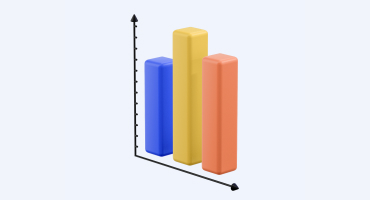

Главное про ИИС: что, зачем и как
Краткое руководство для тех, кто хочет инвестировать, но не знает с чего начать
Вводная часть статьи
Количество зарегистрированных на Московской бирже индивидуальных инвестиционных счетов по состоянию на 6 апреля 2020 года достигло 2 миллионов 1.
ИИС с
каждым годом становится популярнее, и если раньше казалось, что это только для
олигархов сложно, то сейчас очевидно, что инвестировать может каждый.
В статье разберем главные вопросы об инвестициях, с чего начать и как не
облажаться действовать правильно.
Оглавление
Что такое ИИС?
ИИС – это индивидуальный инвестиционный счет, один из способов инвестирования финансов. Такой способ существует в России с 2015 года и представляет собой брокерский счет со льготным налогообложением и некими ограничениями.
У ИИС есть ряд преимуществ по сравнению с брокерским счетом, например, возможность возвращения 13% от внесённой на счет суммы (до 52 000 ₽ в год).
Вычет взноса на налог от прибыльных операций на ИИС предъявляется исключительно в случае закрытия счета, а не ежегодно, если брать брокерский счет во внимание.
Однако, есть некоторые минусы ИИС, например, получение права на налоговый вычет: чтобы осуществить данную операцию, счет должен существовать от трех лет 2 .
Как открыть ИИС?
Для открытия ИИС нужно обратиться к брокеру, который занимается предоставлением таких услуг. На начальном этапе открытия счета инвестор выбирает подходящую стратегию инвестирования.
Есть два варианта открытия ИИС: удаленно или же непосредственно в офисе.
Рейтинг крупнейших российских брокеров
Один из вариантов инвестирования – работа с зарубежными брокерами. Такой способ имеет свою плюсы и минусы. Несмотря на то, что этот вариант похож на работу с российскими брокерами, в нем есть свои нюансы 3.
Американские брокеры, работающие с резидентами из России
| Брокер |
Комиссия за вывод средств |
Комиссия за сделку |
Русскоязычная поддержка |
|---|---|---|---|
| LifeSpeed | 56 $ | 5 $ | Есть |
| TradeOn | 70 $ | 2,5 $ | Нет |
| BestTrade | 40 $ | 1,5 $ | Есть |
| Brokers | 10 $ | 2,99 $ | Нет |
| Choise | 35 $ | 1,99 $ | Нет |
Как управлять ИИС?
Существует два способа управления ИИС: самостоятельное и доверительное. Если вы выбрали самостоятельное управление ИИС, вы принимаете все решения независимо от брокера. За все риски и потери вы отвечаете сами, оплачивая комиссию за сделки брокеру.
В самом начале мы рекомендуем вносить инвестиции с помощью брокера, предварительно разобравшись в основах стратегии инвестирования. Несмотря на то, что брокер будет брать небольшой процент за данную услугу, преимуществ значительно больше по сравнению с самостоятельным управлением.
В начале пути я выбрал самостоятельное управление ИИС и потерял ...
Алексей Гуров, частный инвестор
Как и куда инвестировать через ИИС?
Для начала достаточно и 50 000 ₽, в таком случае вы не будете ощущать различных комиссионных вычетов. Для того, чтобы внести деньги на счет, следует перевести сумму по реквизитам ИИС инвестора.
Все реквизиты должны быть указаны брокером во время подписания договора. Вы можете пополнять ИИС так часто, как вам хочется.
Виды вложений:
-
Акции
- Обыкновенные
- Привилегированные
-
Государственные облигации
- Краткосрочные, среднесрочные, и долгосрочные
- Купонные и бескупонные
- Отзывные и безотзывные
-
Корпоративные облигации
- Срочные и отзывные
- Именные и на предъявителя
- Обычные и целевые
- С распределенным и разовым погашением
Вычеты
Рассмотрим вычет налога на взносы, который дает возможность вернуть НДФЛ в размере 13% от суммы, внесенной на ИИС за этот год. Для получения самого крупного возврата необходимо пополнить счет до 400 000 ₽ за один год и заплатить 52 000 ₽ НДФЛ. Таким образом, больше уплаченного НДФЛ за год вы не вернете.
Рассмотрим пример, в 2017 году вы внесли на счет 220 000 ₽, при этом было удержано 43 000 ₽. Вы можете получить налоговый вычет в размере 28 000 ₽. Для возврата полной суммы налога, вам следовало внести на счет около 319 000 ₽.
Подбробнее о вычете на взносы →Чтобы получить вычет на взносы нужно оформить налоговую декларацию НДФЛ, а также договор на обслуживание ИИС. Если вы вносите деньги до конца года, вы имеете право обратиться за вычетом в начале следующего года.
Вычет на доход освобождает инвестора от уплаты НДФЛ с дохода, полученного с помощью ИИС, независимо от размера дохода. Надо взять в налоговой справку о том, что по этому ИИС вы ни разу не использовали вычет на взносы. Отдайте брокеру справку перед закрытием счета, и брокер не удержит НДФЛ от прибыльных операций на счете.
Подбробнее о вычете на доход →Совмещать оба виды вычетов нельзя. Если хотя бы раз использовали вычет на взносы, вычет на доход по этому ИИС применить не получится. Что лучше? В большинстве случаев вычет на взносы выгоднее, но есть ньюансы.
Расчёт доходов
Кажется просто – покупаете облигации с доходностью 10% и получаете налоговую компенсацию 13%. Складываем и получаем итоговую доходность в 23%. Но все не так просто. Такую доходность инвестиции принесут в первый год, а средства должны пролежать на счете как минимум 3 года. Во второй год и далее компенсация уже не будет составлять 13% от всего счета.
Прибыль ИИС меняется в зависимости от доходности облигаций и сроков инвестирования. При описанных условиях, когда инвестируемые деньги (400 000 ₽) в начале каждого года полностью расходуются вместе с прибылью предыдущего периода для покупки аналогичных облигаций, прибыль считается очень просто. Это аналог банковского вклада с ежегодным пополнением. Результат можно посчитать в виде суммы первых членов геометрической прогрессии:
A ✕ m + r2 = A ✕(r+1)n - 1
- A - размер ежегодных инвестиций
- r – доходность облигации
- m – количество лет
Для упрощения расчёта дохода вы можете воспользоваться
нашим
калькулятором.
Учет
Как только вы начали инвестировать, советуем вам завести привычку вести учет всех активов. С ростом инветиций и без единой формы и отчета, вам будет сложно увидеть полную картинку.
Вы можете разработать собственную отчетную форму, либо воспользоваться нашей таблицей. Записывайте активы и будете видеть точный бюджет поступлений на месяц вперед.
Так, например, вы можете рассчитывается прибыль и убыток по позиции, дату и размер ближайшего поступления от актива, а также отчет по количеству используемых валют.
| Валюта | Кол-во бумаг | Сумма активов | % от активов | |
|---|---|---|---|---|
| в рублях | в долларах | |||
| RUB | 3 | 300 000 ₽ | 4 179 $ | 30% |
| USD | 5 | 500 000 ₽ | 6 965 $ | 50% |
| EUR | 2 | 200 000 ₽ | 2 768 $ | 20% |
| Итого: | 10 | 1 000 000 ₽ | 13 912 $ | 100% |
Коротко о главном
ИИС является одним из простых и удобных способов инвестирования денежных средств на срок от 3-х лет. Своевременная выплата НДФЛ дает возможность его возврата при помощи вычетов на взносы на ИИС.
Об инвестициях для начинающих
Смотеть все-
Как зарабатывать на ИИС
Сейчас лучшее время для открытия ИИС — успеете до конца этого года, в следующем году получите вычет.
С помощью нашего калькулятора вы можете посчитать, сколько заработаете на ИИС при разных вариантах инвестирования, при вычете взноса на доход или вычете на взнос.
Читать дальше -
Ответы на вопросы
Михаил, частный инвестор, отвечает на самые часто возникающие вопросы об ИИС.
Какую биржу выбрать, какие есть риски, куда лучше инвестировать, как получить прибыль от ETF и многое другое. Пишите нам ваши вопросы и мы обязательно на них ответим.
Читать дальше -
Торги на бирже
Биржа – организатор торгов акциями и облигациями. Она нужна для того, чтобы облегчить вам работу, обеспечить безопасную сделку в обмен на процент.
Вы можете торговать и без понимания работы торгов. Но знания о внутренних процессах дадут вам преимущество.
Читать дальше